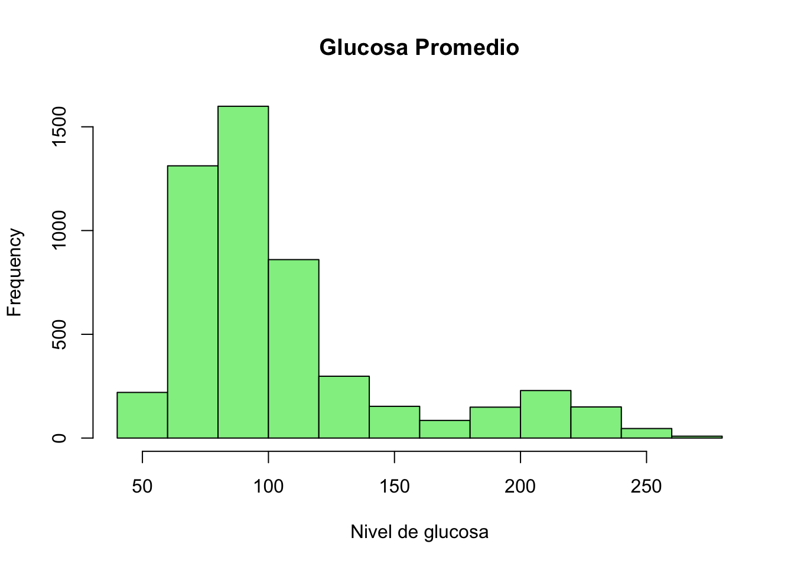

Este capítulo utiliza un conjunto de datos real descargado de Kaggle: Stroke Prediction Dataset, que contiene información demográfica, médica y conductual de pacientes. El objetivo es explorar los datos aplicando técnicas de estadística descriptiva, apoyados por gráficos, código en R y Python, una aplicación Shiny y material audiovisual.
4.1 1. Carga y descripción del conjunto de datos
datos <-read.csv("healthcare-dataset-stroke-data.csv")summary(datos)
id gender age hypertension
Min. : 67 Length:5110 Min. : 0.08 Min. :0.00000
1st Qu.:17741 Class :character 1st Qu.:25.00 1st Qu.:0.00000
Median :36932 Mode :character Median :45.00 Median :0.00000
Mean :36518 Mean :43.23 Mean :0.09746
3rd Qu.:54682 3rd Qu.:61.00 3rd Qu.:0.00000
Max. :72940 Max. :82.00 Max. :1.00000
heart_disease ever_married work_type Residence_type
Min. :0.00000 Length:5110 Length:5110 Length:5110
1st Qu.:0.00000 Class :character Class :character Class :character
Median :0.00000 Mode :character Mode :character Mode :character
Mean :0.05401
3rd Qu.:0.00000
Max. :1.00000
avg_glucose_level bmi smoking_status stroke
Min. : 55.12 Length:5110 Length:5110 Min. :0.00000
1st Qu.: 77.25 Class :character Class :character 1st Qu.:0.00000
Median : 91.89 Mode :character Mode :character Median :0.00000
Mean :106.15 Mean :0.04873
3rd Qu.:114.09 3rd Qu.:0.00000
Max. :271.74 Max. :1.00000
import pandas as pddatos = pd.read_csv("healthcare-dataset-stroke-data.csv")datos.head()
id gender age ... bmi smoking_status stroke
0 9046 Male 67.0 ... 36.6 formerly smoked 1
1 51676 Female 61.0 ... NaN never smoked 1
2 31112 Male 80.0 ... 32.5 never smoked 1
3 60182 Female 49.0 ... 34.4 smokes 1
4 1665 Female 79.0 ... 24.0 never smoked 1
[5 rows x 12 columns]
datos.describe(include='all')
id gender ... smoking_status stroke
count 5110.000000 5110 ... 5110 5110.000000
unique NaN 3 ... 4 NaN
top NaN Female ... never smoked NaN
freq NaN 2994 ... 1892 NaN
mean 36517.829354 NaN ... NaN 0.048728
std 21161.721625 NaN ... NaN 0.215320
min 67.000000 NaN ... NaN 0.000000
25% 17741.250000 NaN ... NaN 0.000000
50% 36932.000000 NaN ... NaN 0.000000
75% 54682.000000 NaN ... NaN 0.000000
max 72940.000000 NaN ... NaN 1.000000
[11 rows x 12 columns]
4.2 2. Gráficos descriptivos
4.2.1 Boxplot de edad según presencia de ACV
boxplot(age ~ stroke, data = datos, main ="Edad por Stroke", col ="lightblue")
import seaborn as snsimport matplotlib.pyplot as pltsns.boxplot(x="stroke", y="age", data=datos)plt.title("Edad por Stroke")plt.show()
4.2.2 Histograma de glucosa promedio
hist(datos$avg_glucose_level, main ="Glucosa Promedio", xlab ="Nivel de glucosa", col ="lightgreen")

sns.histplot(data=datos, x="avg_glucose_level", kde=True, color="green")plt.title("Distribución del nivel de glucosa")plt.show()
4.2.3 Frecuencias y proporciones
table(datos$gender)
Female Male Other
2994 2115 1
prop.table(table(datos$stroke))
0 1
0.95127202 0.04872798
print(datos["gender"].value_counts())
gender
Female 2994
Male 2115
Other 1
Name: count, dtype: int64
Como complemento a este capítulo, se ha desarrollado una aplicación interactiva utilizando Shiny que permite explorar conceptos de estadística descriptiva y análisis exploratorio con visualizaciones dinámicas y opciones personalizables para el usuario.
El análisis exploratorio de datos con herramientas como R y Python permite obtener una comprensión inicial robusta de los patrones en datos biomédicos. Esto es esencial antes de aplicar modelos predictivos como regresión o clasificación. El uso de gráficos y resúmenes numéricos fortalece la interpretación clínica y estadística de los fenómenos observados.